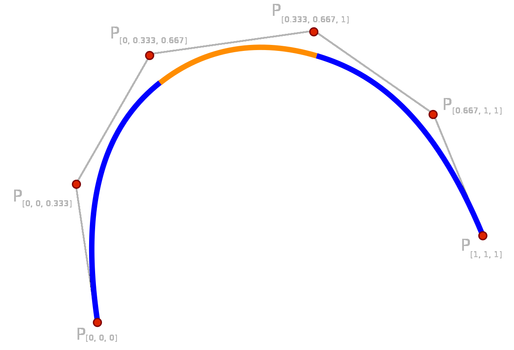
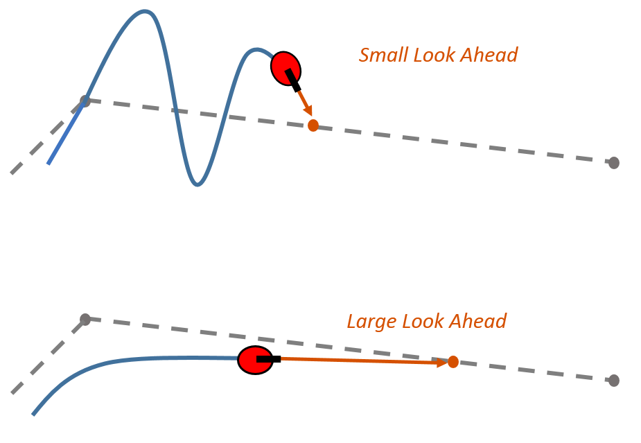

Introduction - June 01, 2020
Table of contents
Reflection
To execute any autonomous routine, the robot needs movement algorithms. These are functions that use sensors, controllers, and kinematics to move the robot somewhere.
My focus in VEX has been developing such algorithms:
- 2018: Tank drive odometry PID (taken from here)
- 2019: X drive odometry PID
- 2019: Pure Pursuit
All these algorithms can achieve various motions and require odometry. However, they all have various weaknesses.
Odometry
The main use of odometry is to unlock many possibilities of motion control. This is because you now have access to much more information that you can feed into the algorithms. For example, if you know the coordinates of the robot, and you want to drive to some other coordinate, it is trivial to calculate position and orientation error and then use PID-based algorithms to minimize that error.
Odometry, however, is a tricky task:
- it drifts a ton
- it requires a robot designed with perfectly calibrated tracking wheels
- it requires much tuning
- it is sensitive to rocking, vibrations, etc
Closed-loop issues
Assuming the robot has perfectly tuned odometry, you still run into issues. This is because anything directly using odometry is inherently a closed loop controller. This means that the controller’s output is a direct function of the robot’s error (calculated from state).

While this theoretically seems like a good thing, as the robot can use sensors to correct for disturbances and errors, consider some realities:
- in VEX (especially skills), there is nothing that will interfere with the robot
- if something is wrong, misalligned, or stuck, odometry can’t fix that
- using vex sensors for localization is not accurate, fast, or smooth
Instead, what ends up happening is that odom introduces noise and variance into the controller, in a vicious cycle of tracking error -> correction -> more error -> unpredictable error.
Is the definition of smooth, consistent control “do the exact same thing every time”, or “aggressively minimize error until the sensors say you are at your destination”? I believe it is the former.
Requirements
Is there a way to achieve the benefits of odometry (more complex and versatile algorithms) without being overreliant on sensors?
I need to develop a motion algorithm that matches the following criteria:
- follow any arbitrary path that is represented by a mathematical function
- use robot kinematics and math to ensure smooth, consistent control by default
- remove a dependence on difficult and noisy sensors
- support sensor augmentation which can use sensors to correct, not steer
This season, driving complex paths will be very useful. Therefore, while moving in straight lines/arcs is useful, we need more.
Specifically, we want the robot to follow a parametric spline. A parametric spline is a function that gives \((x, y)\) as a function of \(t\).

We need to design an algorithm that takes a spline as an input and outputs motor voltages for each side of the robot.
Solutions
Pure Pursuit
One option is Pure Pursuit, an algorithm that uses odometry to project a point along a spline for it to “seek”.
However, since pure pursuit is a closed-loop controller that takes the robot’s current state, measured by sensors (position, speed), and calculates how the robot should move, it falls into the problems with closed-loop control mentioned above - namely this it is unstable, unpredictable, inconsistent, and not smooth.

Open Loop Control
What if we made an algorithm that generates wheel velocities for the robot to follow exactly:
- An open loop controller plans how it will move ahead of time.
- The motion is guaranteed to be smooth, consistent, optimal, and therefore repeatable
- Any tracking error will often be repeatable
However, this means we need to be more deliberate with the calculations. Any errors won’t be compensated for. If the smooth control is not consistent enough, sensors can be used to correct the motion.

In short, we want to design a trajectory generator, where the input is a spline, and the output is wheel velocites.
Objectives
First, let’s define some objectives for our generator:
- We want to develop a trajectory generator that will take a spline as an input and output a list of wheel speeds
- We want to respect the robot’s kinematics (top motor speed and acceleration)
- We want the output to be as smooth and accurate as possible
- We want the generator to be fast enough that we can regenerate while following

Existing Work
Similar projects have been created:
However, this project attempts to beat them all, both in theoretical accuracy and generation speed.
Basic Explanation
A trajectory generator is made by combining many steps together to form a final product.
1D Motion
Let’s say we want the robot to drive a specific distance in a straight line. How can we do this without sensors? How can we make the motion smooth and accurate?

The solution is called a motion profile. A motion profile plans the velocity of the robot over time while respecting kinematics (top motor speed and acceleration).
Specifically, whe want to use a trapezoidal motion profile. In such a profile, the robot accelerates, cruises at full speed, then decelerates. We can solve this profile in such a way that the robot travels a specific distance (area under the graph).

2D Motion
How can we apply a motion profile to a spline? If we analyze how we want the robot to drive:
- Start: we want to start at 0 velocity and accelerate
- Middle: we want to be moving at the maximum speed possible
- End: we want to decelerate to 0 velocity
What if we map the distance along the spline to the distance of the motion profile?
First we need the motion profile to be a function of distance, not time. That way, we can look at our progress along the spline, and we can find out what velocity we should be travelling at!

Finally, we have all the tools we need to start the main algorithm:
- Measure the length of the spline, and solve a motion profile for that distance
- Start at the beginning of the spline
- What velocity should I be moving given the distance travelled?
- What is the curvature of the spline?
- Given the formula \(angular\_velocity = linear\_velocity \cdot curvature\) , what is my angular velocity?
- Record the linear and angular velocity at \(time=0\)
- Wait \(0.01s\), then \(delta\_distance = linear\_velocity * 0.01\)
- Move \(delta\_distance\) along the spline
- Repeat at new distance
If we can implement all these steps, we can achieve the fundamental structure of the trajectory generator!
Major Challenge
The hardest part about this project is the following:
- Given a spline, what is its arc length?
- Given a spline, what new value of \(t\) do I use after I’ve traveled a certain distance?
Recall that a spline is \((x, y)\) as a function of \(t\), in the range \([0, 1]\).
The only way to find arc length of any subset of a spline is extremely inefficient. It involves moving \(t\) in very small increments, and measuring the distances between each point along the spline. After summing the distances, we have the arc length. This takes seconds of time.